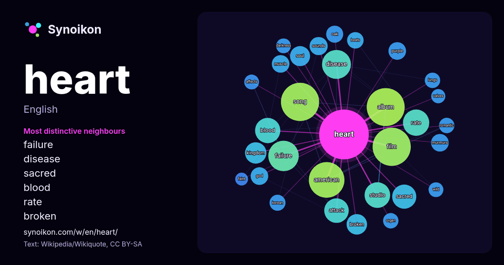

English · popular word
heart
The words found around it in 1683 instances from Wikipedia, Wikiquote, Hacker News.

Most distinctive neighbours
- failure 40×
- disease 29×
- sacred 29×
- blood 25×
- rate 21×
- broken 19×
- soul 18×
- murmurs 18×
- song 16×
- purple 16×
- studio 16×
- muscle 16×
- album 15×
- attack 15×
- oak 14×
- film 13×
- kingdom 13×
- lungs 13×
- american 13×
- darkness 12×
× = how many times more often than in general Wikipedia text.
Most frequent neighbours
- film 80
- song 80
- album 79
- american 70
- failure 51
- disease 46
- rate 38
- studio 36
- blood 35
- attack 33
- sacred 32
- kingdom 25
- broken 23
- soul 22
- right 19
- human 18
- left 18
- series 18
- sounds 18
- god 17
In context
- as the right heart and their left counterparts as the left heart. In a healthy heart, blood flows one way through the heart due to heart valves, which Wikipedia snippets · Heart
- Heart is the eighth studio album by American rock band Heart, released on June 21, 1985, by Capitol Records. The album continued the band's transition Wikipedia snippets · Heart (Heart album)
- Heart to Heart or Heart 2 Heart may also refer to: Heart to Heart (1928 film), a 1928 silent Wikipedia snippets · Heart to Heart
- Heart of the Beast is a 2026 American survival thriller film directed by David Ayer and written by Cameron Alexander. The film stars Brad Pitt as a retired Wikipedia snippets · Heart of the Beast
- To Heart is a Japanese romance eroge visual novel developed by Leaf and released on May 23, 1997, for Windows. It was later ported to the PlayStation Wikipedia snippets · To Heart
- Human error assessment and reduction technique (HEART) is a technique used in the field of human reliability assessment (HRA), for the purposes of evaluating Wikipedia snippets · Human error assessment and reduction technique
- common variant of Hearts Hearts (suit), one of the standard four suits of cards Heart, an organ Hearts may also refer to: The Hearts, an American girl Wikipedia snippets · Hearts
- Heart is an American rock band formed in 1974 in the Pacific Northwest. The band coalesced from previous projects by founding members including the Army Wikipedia snippets · Heart (band)
More words
- art
- autumn
- bell
- bread
- bridge
- cat
- city
- climate
- clock
- death
- desert
- dog
- family
- food
- forest
- garden
- god
- gold
- health
- history
- honey
- horse
- island
- language
- life
- map
- mirror
- money
- mother
- mountain
- nature
- power
- rain
- road
- salt
- science
- shadow
- silence
- song
- star
- storm
- summer
- tea
- time
- train
- truth
- water
- winter
- work
Precomputed on 2026-10-09 with default settings (±5 words, medium corpus). The interactive map can refresh it with live data.